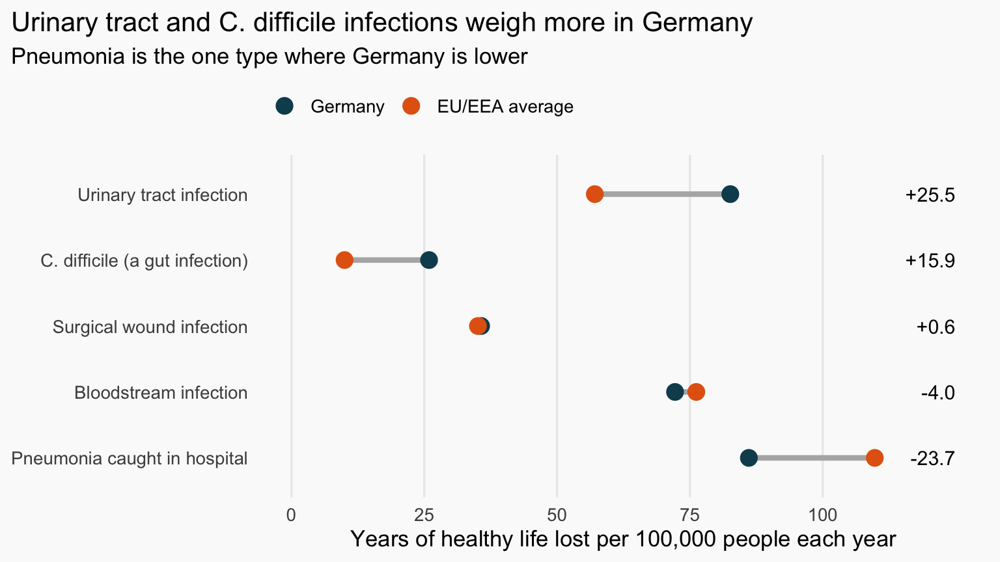

This post is written for readers with no medical or statistics background. Every technical term is explained as it appears.
The problem: getting sicker in the place meant to make you better
Most of us expect a hospital stay to leave us healthier. But some patients pick up a new infection because they are in hospital. Doctors call these healthcare-associated infections: infections that develop during treatment rather than being there when the patient arrives.
They are expensive and long-standing, yet they get far less attention than diseases such as influenza or measles, which must be reported to health authorities. Part of the reason is that national surveys of hospital infections could not easily be turned into a “burden” figure (a measure of how much healthy life a disease takes away) like the ones used for those diseases, so countries were hard to compare. In 2019, Zacher and colleagues closed that gap (Zacher et al. 2019).
This post uses their results to ask two questions:
- Does Germany have a heavier burden of hospital infections than the EU/EEA average? (The EU/EEA is the European Union plus Iceland, Liechtenstein and Norway.)
- Is the burden spread evenly across infection types, or do some stand out?
What the evidence shows
Where the numbers come from
The evidence is a snapshot survey of hospitals across Europe in 2011–12, coordinated by the European Centre for Disease Prevention and Control. A survey like this counts how many patients have an infection on a given day. Zacher and colleagues then used a method developed for other infectious diseases (Cassini et al. 2018), packaged as a statistical software tool, to convert those counts into infections per year, deaths and health burden for five infection types. The figure and table below present the estimates reported in their article in the journal Eurosurveillance (Zacher et al. 2019).
NoteHow to read the numbers
Burden is measured in DALYs (disability-adjusted life years). One DALY is one year of healthy life lost, through illness, disability or early death. We express it per 100,000 people, so countries of different sizes can be compared. Every estimate comes with a range (a 95% uncertainty interval) showing where the true value probably lies. The wider the range, the less certain the estimate.
Question 1: Is Germany’s overall burden heavier?
Partly. The clearest finding is about how often these infections happen: the overall rate in Germany was 1.27 times the EU/EEA average, and the range (1.14 to 1.43) is narrow enough to be confident that this is a real difference.
The health burden is less clear. Germany’s total was 308.2 DALYs per 100,000 people, against 290.0 for the EU/EEA average (the last row of Table 1). That is only about 6% higher, and the uncertainty range (0.68 to 1.67 times the EU/EEA figure) is too wide to say it is truly higher. So Germany seems to have more infections, but those extra infections do not clearly add up to a heavier overall burden.
Question 2: Do some infection types stand out?
Yes. Figure 1 shows Germany and the EU/EEA average side by side, with the biggest gaps at the top.
Two infection types stand out as higher in Germany. Urinary tract infections carried a burden of 82.6 against 57.1 for the EU/EEA average, and C. difficile infections were more than double (25.9 against 10.0). Pneumonia goes the other way (86.1 against 109.8), while surgical wound and bloodstream infections are about the same in both.
How sure can we be? Table 1 gives the exact figures with their ranges.
| Infection type | Germany | EU/EEA average | Germany compared with EU/EEA |
|---|---|---|---|
| Urinary tract infection | 82.6 (34.5–159.2) | 57.1 (24.3–102.9) | Higher |
| C. difficile (a gut infection) | 25.9 (2.5–61.2) | 10.0 (0.9–19.2) | Higher |
| Surgical wound infection | 35.7 (28.9–43.7) | 35.1 (33.3–36.8) | About the same |
| Bloodstream infection | 72.2 (38.3–129.0) | 76.2 (52.6–104.8) | About the same |
| Pneumonia caught in hospital | 86.1 (42.1–145.1) | 109.8 (55.3–170.5) | Lower |
| All five combined | 308.2 (221.2–416.3) | 290.0 (214.9–376.9) | Slightly higher, but not certain |
The ranges overlap for every infection type, so treat these differences as strong signals rather than proof. The size of the gap is what makes urinary tract and C. difficile infections the ones to watch.
Conclusion: one number hides the story
Back to our two questions. First, Germany has more of these infections than the EU/EEA average (1.27 times as many), but the extra infections do not clearly produce a heavier overall burden. Second, the overall figure hides large differences between infection types: urinary tract infections (82.6 against 57.1) and C. difficile infections (25.9 against 10.0) weigh more in Germany, pneumonia weighs less (86.1 against 109.8), and the rest are similar.
The practical lesson is that hospital safety is not a single number. If the aim is to reduce harm, effort is best aimed at the specific infections where Germany’s burden is highest, urinary tract and C. difficile infections in particular, rather than at a uniform national response (Zacher et al. 2019).
One thing to keep in mind: these estimates come from a survey more than a decade old, and the researchers themselves note uncertainty about how representative the German hospitals in the sample were. As newer surveys are done, we will learn whether these infection types remain the priority.
References
Cassini, Alessandro, Edoardo Colzani, Alessandro Pini, et al. 2018. “Impact of Infectious Diseases on Population Health Using Incidence-Based Disability-Adjusted Life Years (DALYs): Results from the Burden of Communicable Diseases in Europe Study, European Union and European Economic Area Countries, 2009 to 2013.” Eurosurveillance 23 (16). https://doi.org/10.2807/1560-7917.es.2018.23.16.17-00454.
Zacher, Benedikt, Sebastian Haller, Niklas Willrich, et al. 2019. “Application of a New Methodology and R Package Reveals a High Burden of Healthcare-Associated Infections (HAI) in Germany Compared to the Average in the European Union/European Economic Area, 2011 to 2012.” Eurosurveillance 24 (46). https://doi.org/10.2807/1560-7917.es.2019.24.46.1900135.